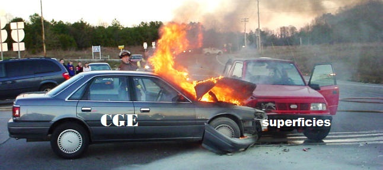

Este es el título principal de la página, solo puede haver uno ya que es un H1
Titulo de nivel 2, puede haver varios, uno por sección de contenido. Elementos de texto
En este párrafo, se explica el contenido del tag article, que no se repetirá en mas sitios de la aplicación. En los parrafos ponemos textos en gran cantidad. Cuidado, soy un elemento de bloke igual que un div
Un span, es un elemento de texto inline, va muy bien para dar estilo o funcionalidad a textos.
Para destacar elementos, si solo queremos que sean a nivel visual usaremos los B o I por
ejemplo.
Para destacarlos a nivell de contenido usaremos los strong. A google lo molan.
Otro título de nivel 2, porque puedo poner varios. Elementos de formulario
Los elementos de formulario están contenidos dentro de un elemento form (si no no es un html W3C válido).
Último título de nivel 2 - Otros elementos
Un enlace, como no quiero que enlace le pongo de dirección un #, es una buena practica y una convención muy usada.En los A hay que ponerles title, con una explicación de a donde nos redirige, hace la navegación más accesible.
Es obligatorio poner el atributo alt a las imagenes ya que es accesible. Si una persona invidente utiliza nuestra aplicación podrá usar los alts.